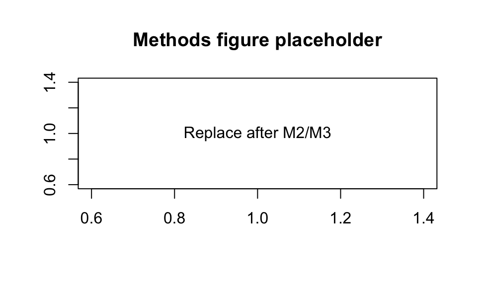

Forest Composition, Biodiversity, and Wildfire Resilience: Analyzing Biodiversity and Wildfire Outcomes on Indigenous and Non-Indigenous Lands Across Oregon
Authors
Spencer Fiden
Amaya Supancich-McCord
Published
June 8, 2026
1 Title, Team, and Affiliations
Project title: Forest Composition, Biodiversity, and Wildfire Resilience: Analyzing Biodiversity and Wildfire Outcomes on Indigenous and Non-Indigenous Lands Across Oregon
Name
Role
Willamette email
Spencer Fiden
Owner Product Lead
nefiden@willamette.edu
Amaya Supancich-McCord
Owner Product Lead
asupancichmccord@willamette.edu
Peer Stakeholder POs: Siera Edwards, Brooke Proctor, Serenna Walter (Shared Theme: Pacific Northwest forest and environmental health.)
(150 to 250 words after you have results. Summarize: problem, approach, key finding, impact, limitation. Write this section last.)
3 Introduction: Problem and Research Questions
Problem statement: Wildfires continue to threaten and impact Oregon residents and forests, and are exacerbated by climate change and the presence of landscape fuels created by fire-exclusion policies (Lundeberg, 2026). The continued loss of mature and old-growth forests would impact the wider Oregon ecological landscape, and unchecked wildfires will impact Oregon residents through loss of homes and potentially increasing mortality rates and fire severity increases. A method to see continuing change in forest composition and wildfire severity through open-source data and answers to our research questions below that are easily interpretable for our stakeholders with less technical backgrounds.
Primary research question: To what extent are federally recognized Indigenous lands characterized by different forest composition and wildfire severity outcomes compared with nearby ecologically similar non-Indigenous lands across the Pacific Northwest and Western United States?
Secondary questions:
Sub-RQ1A: Are Indigenous lands associated with greater forest compositional diversity than nearby non-Indigenous lands?
Sub-RQ1B: Are Indigenous lands associated with lower wildfire severity after controlling for forest type, climate region, and fire size?
Sub-RQ1C: Which ecological features (tree diversity, understory diversity, keystone species presence) are most predictive of wildfire severity?
Changes since M1 proposal:(none yet, or explain pivot)
4 Impact and Stakeholders
Who benefits:
Indigenous community leaders in the PNW
Those living on tribal lands and hoping to gain a better understanding of their wildfire risk
PNW residents at high risk of wildfires
Communities with compounding risks (i.e. social vulnerabilities, other environmental hazards)
Forest management & fire prevention officials
Environmental hazard preparedness organizations
Impact: Our stakeholders will have a more comprehensive understanding of wildfire risks and forest composition across Oregon in reference to Indigenous lands. We will also create a pipeline using publicly available data that will continue to be updated that future researchers can reference for up-to-date analysis.
Shared Theme and peer PO influence: Our peer POs are also exploring Pacific Northwest forest and environmental health. They will help guide our metrics of forest composition and wildfire severity, as well as pushing us to ensure our results sufficiently benefit our stakeholders.
5 Related Work and Background
Tribes in the Pacific Northwest have been stewarding forests for millennia. These practices were (and still are) interrupted by American colonialism, which in turn impacted forest health and worsened outcomes from wildfires (Gleason, 2025). While there is momentum toward co-stewardship, issues such as federal funding gaps between tribes and the Forest Service impede effective fire stewardship (Gleason, 2025). Before policies against fire were in place, frequent low-severity fires were an important part of Indigenous fire stewardship, and without them, forest structures have shifted–the PNW’s mature and old-growth forests are at increased risk of more severe wildfires (Lundeberg, 2026). Increasingly frequent and extreme wildfires are threatening Oregon residents, the majority of whom live west of the Cascades, which are at heightened risk of fires, and rely on Cascadian watersheds for water and electrical power Coughlan M. R. and R. (2024).
6 Data and Data Engineering
Sources:
Source
Role
Access
Engineering summary: Raw data in data/raw/; processed panel in data/processed/; ingest scripts in src/ingest/.
# Replace with your project data when ready:# panel <- readRDS(here::here("data/processed/analysis_panel.rds"))# nrow(panel)knitr::kable(data.frame(check =c("Rows", "Counties", "Date range"),status =c("stub", "stub", "stub")))
Table 1: Example QC summary (replace with your panel)
check
status
Rows
stub
Counties
stub
Date range
stub
7 Ethics and Responsible Use
Privacy:
Fairness / equity:
Limitations of setting:
Non-causal framing:(if observational)
8 Methods and Evaluation
Design:
Primary analysis:
Evaluation metrics:
Train / validation / holdout:

Figure 1: Replace with a methods diagram or exploratory plot
cd your-repoquarto render deliverables/M4-writeup-draft/writeup.qmd
Dependencies:requirements.txt or renv.lock in repo root.
Data: URLs and approval status documented in docs/data-dictionary.md.
13 References
Coughlan M. R., Derr K. M., Johnston J. D., and Johnson B. R. 2024. “Pre-Contact Indigenous Fire Stewardship: A Research Framework and Application to a Pacific Northwest Temperate Rainforest.”Front. Environ. Archaeol.